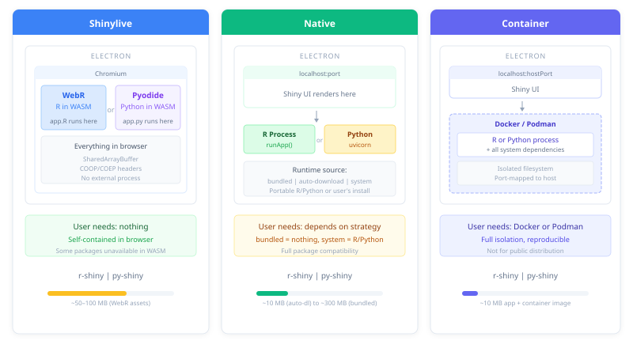

install.packages("pak")
pak::pak("coatless-rpkg/shinyelectron")Ship a Shiny app as a desktop application. R or Python, macOS, Windows, or Linux. Your users double-click an .app, .exe, or AppImage. No server, no browser tab, no deployment.

Install the package
shinyelectron is not on CRAN yet. Install it from GitHub with pak.
Run a pre-flight check
Diagnose before you build. It saves hours later.
sitrep_shinyelectron() verifies Node.js (>= 22.0.0), npm, required R packages, Python, and platform build tools. If Node.js is missing, install it locally without admin rights.
Build a demo end to end
Ship a bundled example before touching your own app. It confirms the toolchain works.
# List available demos
available_examples()
# Export the R single-app demo to your Desktop
export(
appdir = example_app("r-single"),
destdir = "~/Desktop/my-first-app",
run_after = TRUE
)One call converts the demo to shinylive, wraps it in Electron, builds a distributable, and launches it. Roughly a minute on a small app.
Export your Shiny app
Shinylive: runs in the browser
The default runtime strategy compiles your app to WebAssembly. R uses WebR. Python uses Pyodide. Either way, the app runs in the browser, and the browser runs inside Electron. The user installs nothing.
Use this strategy whenever your dependencies allow it. shinyelectron detects the app language from the files in appdir, so you usually only need to point at the directory.
# R (language autodetected from app.R, shinylive is the default strategy)
export(
appdir = "path/to/my-app", # directory containing app.R
destdir = "my-electron-app",
app_name = "My App"
)
# Python (language autodetected from app.py)
export(
appdir = "path/to/my-py-app", # directory containing app.py
destdir = "my-py-electron-app",
app_name = "My App"
)Native: runs a real R or Python process
Some packages do not compile to WebAssembly. For those, spawn a real R or Python process behind the Electron window by picking a non-shinylive runtime_strategy.
# R Shiny with auto-download (downloads R on first launch)
export(
appdir = "path/to/my-app",
destdir = "my-native-app",
runtime_strategy = "auto-download"
)
# Python Shiny with a bundled runtime (ships Python inside the app)
export(
appdir = "path/to/my-py-app",
destdir = "my-bundled-py-app",
runtime_strategy = "bundled"
)
Choose an app type and runtime strategy
Two dials drive every shinyelectron build: the app language (app_type) and how the runtime reaches the user (runtime_strategy). shinyelectron autodetects app_type from the files in appdir, so you usually set only the strategy.
| App Type | Entry File | Best For |
|---|---|---|
r-shiny |
app.R |
R Shiny apps |
py-shiny |
app.py |
Python Shiny apps |
runtime_strategy decides how your code actually runs. All five strategies work with both r-shiny and py-shiny.
| Strategy | Behavior | App Size | First Launch | Best For |
|---|---|---|---|---|
shinylive |
Compiles app to WebAssembly, runs in-browser | Medium | Instant, offline | Simple apps whose deps run in WebR or Pyodide (default) |
auto-download |
Downloads R/Python on first launch | Small | Needs internet | Public distribution, smaller download |
bundled |
Ships R/Python inside the app | Large (~200MB+) | Instant, offline | Public distribution, offline first run |
system |
Uses R/Python already installed | Smallest | Requires pre-install | Internal tools for users who already have R or Python |
container |
Runs inside Docker/Podman | Small | Needs Docker | Complex system dependencies, reproducibility |
See Runtime Strategies for when to pick each.
What export produces
export() writes two siblings into destdir: the prepared app and the Electron project that wraps it. The app is then copied into electron-app/src/app/, which is the path Electron actually loads at runtime.
my-electron-app/
├── shinylive-app/ # shinylive strategy: WebAssembly bundle
│ (or shiny-app/) # other strategies: app source plus a manifest
└── electron-app/
├── src/app/ # Copy of the sibling above (what Electron loads)
├── main.js # Electron entry point
├── renderer.html
├── package.json
├── node_modules/
└── dist/ # Ready-to-distribute binaries
├── mac-arm64/
│ └── My App.app
├── win-x64/
│ └── My App Setup.exe
└── linux-x64/
└── My App.AppImageShip dist/. The rest is build scaffolding, though the sibling app directory is useful when you want to inspect exactly what Electron is serving.
Build for several platforms in one call
Pass vectors to platform and arch to produce several targets in one call.
Not every combination is portable. Two rules to keep in mind:
-
macOS apps build only on macOS. Apple’s signing and
.apppackaging run through native tools. Windows and Linux will cross-compile from macOS, but each platform’s own native build is more reliable. -
The
bundledruntime strategy needs a matching host. A bundled app embeds a platform-specific R or Python binary at build time, so exporting for Windows requires building on Windows, and the same for macOS and Linux.auto-download,system, andcontainersidestep this: the runtime is fetched, found, or isolated at launch instead of at build, so any host can target any platform.
In practice, if you want a single workstation to emit installers for every OS, reach for auto-download or container. If you want bundled everywhere, hand the job to CI (see the GitHub Actions article).
Give the app a custom icon
Point icon at a single file. Each platform wants its own format: .icns for macOS, .ico for Windows, .png for Linux.
export(
appdir = "my-app",
destdir = "my-electron-app",
icon = "icon.icns"
)Capture build settings in a config file
Once your build options are settled, move them out of the function call and into _shinyelectron.yml alongside your app.
init_config("my-app")app:
name: "My Dashboard"
version: "1.0.0"
build:
type: "r-shiny"
runtime_strategy: "bundled"
platforms: [mac, win]export() picks it up automatically.
export(appdir = "my-app", destdir = "output")See the Configuration Guide for every option.
Where to go next
-
Configuration Guide: every
_shinyelectron.ymloption - Runtime Strategies: bundled, system, auto-download, container
- Multi-App Suites: bundle several apps in one shell
- Code Signing: sign for macOS GateKeeper and Windows SmartScreen
- Troubleshooting: common issues and fixes
Function cheat sheet
| Function | Purpose |
|---|---|
export() |
Convert and build Shiny app to Electron |
app_check() |
Pre-flight validation without building |
wizard() |
Interactive config generator |
sitrep_shinyelectron() |
Full system diagnostics |
install_nodejs() |
Install Node.js locally |
available_examples() |
List bundled demo apps |
example_app() |
Get path to a demo app |
run_electron_app() |
Launch a built Electron app |
cache_clear() |
Clear cached runtimes and assets |